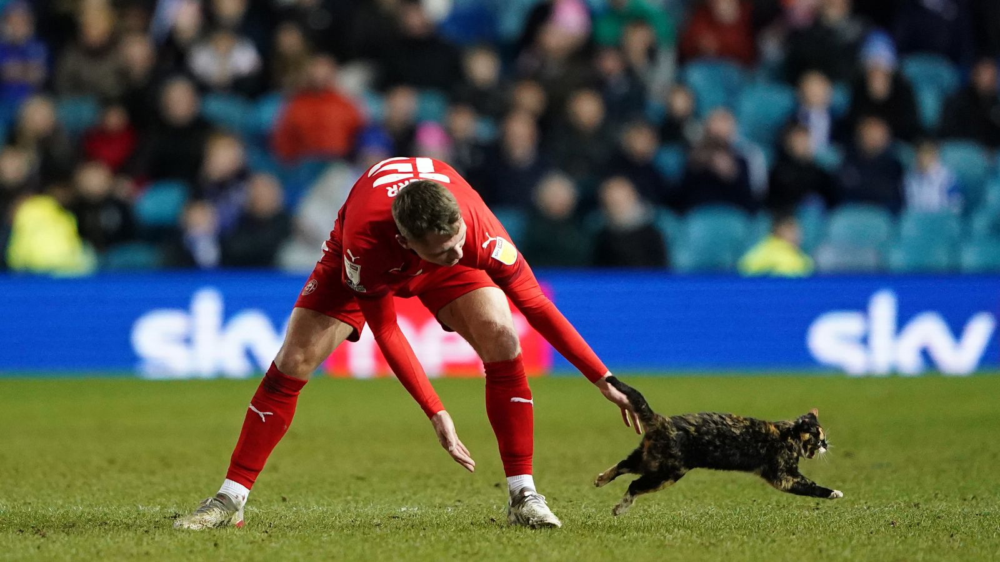

Cat runs onto pitch in the middle of a football match, named best player
A cat, Gerald, ran onto the pitch of Woking’s home stadium during a football match against AFC Fylde (the Kingfield Stadium). Allegedly, according to Arthur (Gerald’s owner) he ran away from him in the midst of the crowd. Losing him, he scrambles and is ‘shocked’ to see Gerald running past the guards and onto the pitch. Running past 5 guards in total, dodging and weaving. However that’s not the best part as Gerald got the ball off the AFC Fylde player - Danny Whitehead - and proceeded to dribble past all the players and score the winning goal. Gerald rightfully got awarded Man of the Match Award and made a response, when asked how he achieved this he said : ‘meow, meow, me..’
After the match, Danny Whitehead (the player who was tackled) was interviewed and he stated ‘... absolutely embarrassing and ridiculous performance from our part. However, somebody needs to sign the cat!’ and it appears that the club Woking also thought so, as they bought Gerald on a free transfer and now Arthur is receiving £2k every week, with his contract expiring next year. During the interview Arthur says that he “quits the job” and will instead “focus on training Gerald” full time.
This has caught a lot of attention online, as Arthur who had only 2 followers on Instagram now has over 1 million followers. However, Arthur has also made a Gerald account that has blown up to over 629 million, posing a threat to Ronaldo’s record of 630 million and is expected to surpass him in the near future. Now Gerald isn’t eating cat food and instead eating high protein dishes and sticking to a diet from his personal chef. He has been seen also hanging out with many Premier League players like the Man City squad training with him and doing the crossbar challenge (seen from his latest post from Instagram).
But in recent days, there are rumours that Barcelona is interested in his signature and could try to trigger his release clause of a fiver and a pasty to do a summer signing. But this is just a rumour and is highly unlikely as everyone knows their financial situations with players wages.
Back to Home